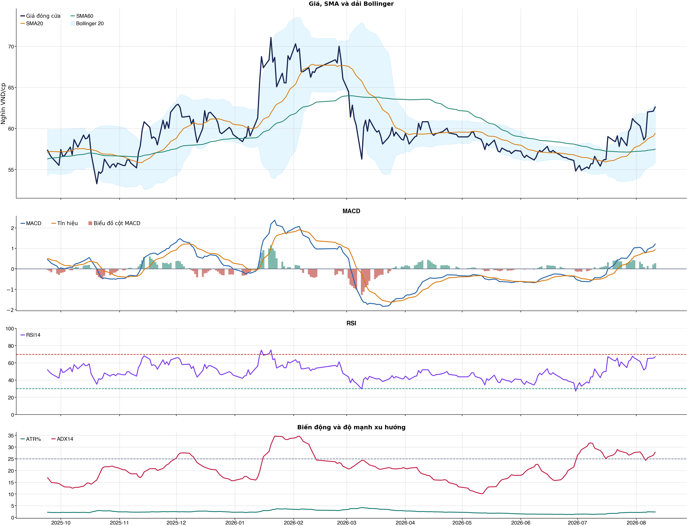
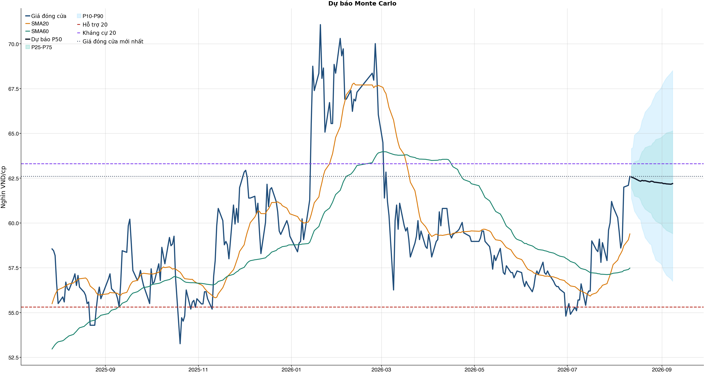
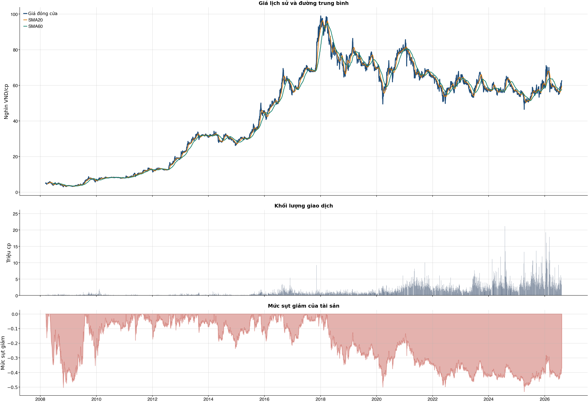

Kết quả chính
Tổng quan cơ bản
Biểu đồ kỹ thuật

Tín hiệu kỹ thuật
| Xu hướng | Tích cực | Giá nằm trên SMA20 và SMA60. |
| MACD | Tích cực | MACD trên signal, histogram dương. |
| RSI14 | Tích cực | RSI 66.9. |
| Bollinger | Gần biên trên | Giá sát/vượt biên trên. |
| ADX | Xu hướng tăng | ADX 27.8, +DI vượt -DI. |
| Thanh khoản | Thấp | 0.43 lần trung bình. |
| Stochastic | Cực trị | %K 89.1, %D 85.1. |
So sánh mô hình
| XGBoost | 0.503 | AUC 0.526 |
| Logistic | 0.538 | AUC 0.561 |
| Đa số | 0.500 | Mốc so sánh |
Kiểm thử chiến lược ngoài mẫu sau chi phí
| Lợi nhuận ròng | -33.9% | 737 quan sát ngoài mẫu |
| Sharpe | -1.41 | Sau chi phí |
| Mức sụt giảm tối đa | -35.8% | 69 vòng giao dịch |
| Chi phí giả định | 50.0 bps | Một vòng mua và bán |
Mức độ quan trọng của đặc trưng
| relative_strength_20d | 11.62 | Mức đóng góp |
| close_vs_sma20 | 11.55 | Mức đóng góp |
| return_3d | 11.53 | Mức đóng góp |
| return_1d | 10.84 | Mức đóng góp |
| volatility_20d | 10.25 | Mức đóng góp |
| bb_position_20 | 9.94 | Mức đóng góp |
| month_of_year | 9.74 | Mức đóng góp |
| return_10d | 9.50 | Mức đóng góp |
Điều kiện phát hành tín hiệu
| AUC của mô hình | KHÔNG ĐẠT | Điều kiện phát hành tín hiệu |
| Độ chính xác cân bằng của mô hình | KHÔNG ĐẠT | Điều kiện phát hành tín hiệu |
| XGBoost vượt mô hình Logistic đối chứng | KHÔNG ĐẠT | Điều kiện phát hành tín hiệu |
| Xác suất tăng đạt ngưỡng | ĐẠT | Điều kiện phát hành tín hiệu |
| Bối cảnh kỹ thuật đạt ngưỡng | ĐẠT | Điều kiện phát hành tín hiệu |
| Tỷ lệ lợi nhuận/rủi ro đạt ngưỡng | ĐẠT | Điều kiện phát hành tín hiệu |
| Dữ liệu còn mới | ĐẠT | Điều kiện phát hành tín hiệu |
| Có khối lượng vị thế hợp lệ | ĐẠT | Điều kiện phát hành tín hiệu |
| Có kết quả kiểm thử chiến lược ngoài mẫu | ĐẠT | Điều kiện phát hành tín hiệu |
| Mẫu kiểm thử chiến lược đủ lớn | ĐẠT | Điều kiện phát hành tín hiệu |
| Kiểm thử chiến lược có lợi thế ròng | KHÔNG ĐẠT | Điều kiện phát hành tín hiệu |
Quản trị rủi ro
| Rủi ro/lệnh | 1.0% | 1,000,000 VND |
| Mức dừng lỗ | 60.41 | Rủi ro mỗi cổ phiếu 2.50 |
| Mục tiêu 1 | 68.50 | Lợi nhuận/rủi ro 2.23 |
| Mục tiêu 2 | 68.50 | Dự báo/kháng cự |
Phân tích cơ bản
| P/E | 11.84 | 2026-Q2 |
| P/B | 4.07 | 2026-Q2 |
| P/S | 1.88 | 2026-Q2 |
| ROE | 33.9% | 2026-Q2 |
| ROA | 19.8% | 2026-Q2 |
| Gross margin | 42.2% | 2026-Q2 |
| Net margin | 15.9% | 2026-Q2 |
| Debt/Equity | 0.61 | 2026-Q2 |
| Current ratio | 1.91 | 2026-Q2 |
| NPL | 0.0% | 2026-Q2 |
| Dividend yield | 0.0% | 2026-Q2 |
| Market cap | 129,786.2 tỷ | 2026-Q2 |
| Revenue Growth | 12.7% | 2026-Q2 YoY |
| Profit Growth | 28.0% | 2026-Q2 YoY |
| Dòng tiền từ HĐKD | 3,204.5 tỷ | 2026-Q2 |
| CAPEX | -326.0 tỷ | 2026-Q2 |
| Lợi nhuận sau thuế | 3,184.4 tỷ | 2026-Q2 |
| Lợi nhuận hoạt động | 3,909.0 tỷ | 2026-Q2 |
| Chi phí lãi vay | -116.1 tỷ | 2026-Q2 |
| Tiền và tương đương tiền | 4,535.7 tỷ | 2026-Q2 |
| Vay ngắn hạn | 8,323.4 tỷ | 2026-Q2 |
| Vay dài hạn | 131.4 tỷ | 2026-Q2 |
| Tổng tài sản | 57,451.8 tỷ | 2026-Q2 |
| Tổng nợ phải trả | 21,785.5 tỷ | 2026-Q2 |
| Vốn chủ sở hữu | 35,666.3 tỷ | 2026-Q2 |
| Khoản phải thu | 5,949.4 tỷ | 2026-Q2 |
| Hàng tồn kho | 7,720.3 tỷ | 2026-Q2 |
| Dòng tiền tự do (CFO - CAPEX) | 2,878.4 tỷ | 2026-Q2 |
| CFO / Lợi nhuận sau thuế | 1.01 | 2026-Q2 |
| Nợ vay ròng | 3,919.2 tỷ | 2026-Q2 |
| Nợ vay / Vốn chủ sở hữu | 0.24 | 2026-Q2 |
| Phải thu / Tổng tài sản | 10.4% | 2026-Q2 |
| Khả năng trả lãi (EBIT / lãi vay) | 33.67 | 2026-Q2 |
Tin tức doanh nghiệp
| Trạng thái | Có dữ liệu | research_only |
| Nguồn / số bài | VCI | 50 |
| Bài đủ timestamp | 50 | Chỉ các bài này mới được phép dùng point-in-time |
| Sentiment 5 ngày | 0.00 | 0.0 bài trước cutoff |
| Phương pháp | keyword_heuristic_v1 | Research only; chưa dùng làm tín hiệu mua/bán |
Dự báo ngắn hạn
| 2026-08-12 | 62.56 | P10 61.37 / P90 64.15 |
| 2026-08-13 | 62.53 | P10 61.04 / P90 64.21 |
| 2026-08-14 | 62.49 | P10 60.67 / P90 64.90 |
| 2026-08-17 | 62.36 | P10 60.24 / P90 65.13 |
| 2026-08-18 | 62.33 | P10 60.18 / P90 65.32 |
| 2026-08-19 | 62.38 | P10 59.73 / P90 65.71 |
| 2026-08-20 | 62.35 | P10 59.48 / P90 65.90 |
| 2026-08-21 | 62.36 | P10 59.18 / P90 66.18 |
Biểu đồ dự báo

Lịch sử giá và mức sụt giảm

Báo cáo dùng để học tập và lập kịch bản, không phải khuyến nghị mua/bán.
Phân tích AI có kiểm chứng
Trạng thái quyết định: NO_EDGE
Tóm tắt: ML decision hiện giữ nguyên NO_EDGE. News Reader đã trích đoạn có nguồn của 3 bài để phân loại chủ đề (ket_qua_kinh_doanh: 3, co_tuc_va_hanh_dong_doanh_nghiep: 2, vi_mo: 2, nganh: 3, rui_ro: 1), nhưng các trích đoạn này không tạo bằng chứng mới cho quyết định đầu tư.
Kỹ thuật: Artifact kỹ thuật: bias Tích cực; điểm 6. Chi tiết artifact: Xu hướng: Tích cực (Giá nằm trên SMA20 và SMA60.); MACD: Tích cực (MACD trên signal, histogram dương.); RSI14: Tích cực (RSI 66.9.); Bollinger: Gần biên trên (Giá sát/vượt biên trên.); ADX: Xu hướng tăng (ADX 27.8, +DI vượt -DI.); Thanh khoản: Thấp (0.43 lần trung bình.); Stochastic: Cực trị (%K 89.1, %D 85.1.)
Cơ bản: Artifact cơ bản: VINAMILK; kỳ 2026-Q2; P/E 11.84; P/B 4.07; ROE 33.9%; ROA 19.8%; Debt/Equity 0.61; Revenue Growth 12.7%; Profit Growth 28.0%.
Tin tức: Đã đọc trích đoạn giới hạn của 3 bài; phân nhóm rule-based: ket_qua_kinh_doanh: 3, co_tuc_va_hanh_dong_doanh_nghiep: 2, vi_mo: 2, nganh: 3, rui_ro: 1. Tác động cần kiểm chứng: Đối chiếu doanh thu/lợi nhuận trong bài với BCTC và kỳ vọng thị trường. Kiểm tra ngày GDKHQ, tỷ lệ, nguồn chi trả và nguy cơ pha loãng trước khi đánh giá tác động. Đối chiếu thời điểm công bố và kênh tác động lãi suất/tỷ giá với mô hình kinh doanh. So sánh tín hiệu ngành với thị phần, nhu cầu và đối thủ trước khi suy luận cho riêng doanh nghiệp. Xác minh công bố chính thức, phạm vi ảnh hưởng và khả năng định lượng rủi ro. Đây không phải sentiment hay dự báo tác động giá.
Live research: Live snapshot lấy lúc 2026-08-11T05:31:08.097536+00:00; News Reader đọc được 3 bài. ML có 4 lý do guard và vẫn là NO_EDGE. Không dùng tin live để train/backtest.
Rủi ro cần kiểm chứng
- ML guard: AUC 0.526 < 0.540
- ML guard: Balanced accuracy 0.503 < 0.520
- ML guard: XGBoost chưa vượt logistic baseline: AUC XGBoost=0.5264774209973586, AUC logistic=0.5608471501766222
- ML guard: Lợi thế OOS ròng không đạt: return=-0.3386612699999999, Sharpe=-1.4065692077437657
- News Reader: Đối chiếu doanh thu/lợi nhuận trong bài với BCTC và kỳ vọng thị trường.
- News Reader: Kiểm tra ngày GDKHQ, tỷ lệ, nguồn chi trả và nguy cơ pha loãng trước khi đánh giá tác động.
- News Reader: Đối chiếu thời điểm công bố và kênh tác động lãi suất/tỷ giá với mô hình kinh doanh.
- News Reader: So sánh tín hiệu ngành với thị phần, nhu cầu và đối thủ trước khi suy luận cho riêng doanh nghiệp.
- News Reader: Xác minh công bố chính thức, phạm vi ảnh hưởng và khả năng định lượng rủi ro.
- Chỉ lưu trích đoạn giới hạn để kiểm chứng nguồn; không lưu hay hiển thị toàn văn bài báo.
- Phân nhóm là keyword rule-based để định tuyến research, không phải sentiment hay dự báo tác động giá.
- Dữ liệu News Reader chỉ phục vụ research/report; không dùng làm feature train/backtest khi chưa có lịch sử available_at point-in-time.
- Tin live/trích đoạn cần mở URL gốc để kiểm chứng bối cảnh, số liệu và thời điểm trước khi sử dụng.
Bằng chứng
- ML decision artifact: NO_EDGE. AUC 0.526 < 0.540
- ML decision artifact: NO_EDGE. Balanced accuracy 0.503 < 0.520
- ML decision artifact: NO_EDGE. XGBoost chưa vượt logistic baseline: AUC XGBoost=0.5264774209973586, AUC logistic=0.5608471501766222
- ML decision artifact: NO_EDGE. Lợi thế OOS ròng không đạt: return=-0.3386612699999999, Sharpe=-1.4065692077437657
- News Reader [VietstockFinance]: VNM: Khuyến nghị MUA với giá mục tiêu 73,500 đồng/cổ phiếu - VietstockFinance | nhóm: ket_qua_kinh_doanh, co_tuc_va_hanh_dong_doanh_nghiep, vi_mo, nganh (2026-08-06T11:10:52+00:00)
- News Reader [nguoiquansat.vn]: Cổ phiếu đáng chú ý ngày 6/8: MSB, VNM, VPB, - nguoiquansat.vn | nhóm: ket_qua_kinh_doanh, co_tuc_va_hanh_dong_doanh_nghiep, vi_mo, nganh, rui_ro (2026-08-05T16:30:01+00:00)
- News Reader [VietnamBiz]: Cổ phiếu doanh nghiệp Nhà nước đồng loạt hút tiền, VNM, BCM, GAS và GVR tăng trần - VietnamBiz | nhóm: ket_qua_kinh_doanh, nganh (2026-08-07T03:52:00+00:00)
Báo cáo chỉ tổng hợp artifact đã lưu để nghiên cứu; không phải khuyến nghị mua/bán. Quyết định và vị thế vẫn bị khóa theo signal_decision.json.
Tin web đã lấy
| Nguồn | Tiêu đề | Thời điểm | Link |
|---|---|---|---|
| CafeF | Cổ phiếu Vinamilk có 'biến' - CafeF | 2026-08-07T04:05:00+00:00 | Mở nguồn |
| VietstockFinance | VNM: Khuyến nghị MUA với giá mục tiêu 73,500 đồng/cổ phiếu - VietstockFinance | 2026-08-06T11:10:52+00:00 | Mở nguồn |
| nguoiquansat.vn | Cổ phiếu đáng chú ý ngày 6/8: MSB, VNM, VPB, - nguoiquansat.vn | 2026-08-05T16:30:01+00:00 | Mở nguồn |
| VietnamBiz | Cổ phiếu doanh nghiệp Nhà nước đồng loạt hút tiền, VNM, BCM, GAS và GVR tăng trần - VietnamBiz | 2026-08-07T03:52:00+00:00 | Mở nguồn |
| VietstockFinance | VNM: Khuyến nghị MUA với giá mục tiêu 86,800 đồng/cổ phiếu - VietstockFinance | 2026-08-06T18:16:17+00:00 | Mở nguồn |
| CafeF | Doanh nghiệp bảo hiểm đầu tư cổ phiếu lãi, lỗ ra sao? - CafeF | 2026-08-07T13:37:00+00:00 | Mở nguồn |
News Reader: bài đã đọc và trích đoạn
| Nguồn | Tiêu đề | Nhóm | Thời điểm | Trích đoạn đã đọc | Link |
|---|---|---|---|---|---|
| VietstockFinance | VNM: Khuyến nghị MUA với giá mục tiêu 73,500 đồng/cổ phiếu - VietstockFinance | ket_qua_kinh_doanh, co_tuc_va_hanh_dong_doanh_nghiep, vi_mo, nganh | 2026-08-06T11:10:52+00:00 | Xem trích đoạnThứ Ba, 11/08/2026 Vietstock ( VN | EN ) Đấu trường chứng khoán Diễn đàn IR Awards Dịch vụ Vietstock ( VN | EN ) Đấu trường chứng khoán Diễn đàn IR Awards Dịch vụ Đấu trường chứng khoán Diễn đàn IR Awards Dịch vụ Vĩ mô Dữ liệu Cập nhật chỉ số vĩ mô mới nhất 1. Tài khoản quốc gia (GDP) Tổng sản phẩm trong nước (GDP) 2. Chỉ số giá và lạm phát Chỉ số giá và lạm phát cơ bản 3. Thị trường lao động và việc làm Chi tiết Thị trường lao động và việc làm 4. Thị trường bán lẻ Thị trường bán lẻ hàng hóa và dịch vụ 5. Sản xuất công nghiệp Chi tiết sản xuất toàn ngành công nghiệp 6. Bất động sản và xây dựng Chi tiết Bất động sản và Xây dựng 7. Cán cân thanh toán quốc tế Tổng hợp giao dịch kinh tế quốc tế 8. Chính sách tài khóa và tài chính quốc gia Chi tiết quản lý thu, chi ngân sách và nợ công, điều tiết kinh tế 9. Chính sách tiền tệ Chính sách tiền tệ: điều tiết cung tiền, lãi suất, ổn định giá 10. Đầu tư trực tiếp nước ngoài (FDI) Vốn nước ngoài vào sản xuất, kinh doanh nội địa 11. Xuất nhập khẩu theo quốc gia và hàng hóa Chi tiết xuất nhập khẩu theo quốc gia và hàng hóa cụ thể Báo cáo phân tích Báo cáo phân tích vĩ mô mới nhất Thuật ngữ Các thuật ngữ vĩ mô Tin tức Tin tức thị trường vĩ mô mới nhất Ngành Dữ liệu ngành Tổng quan ngành Ngành chi tiết Thông tin chi tiết một ngành Năng lượng Chi tiết ngành Năng lượng Nguyên vật liệu Chi tiết ngành Nguyên vật liệu Công nghiệp Chi tiết ngành Công nghiệp Tiêu dùng không thiết yếu Chi tiết ngành Tiêu dùng không thiết yếu Tiêu dùng thiết yếu Chi tiết ngành Tiêu dùng thiết yếu Chăm sóc sức khỏe Chi tiết ngành Chăm sóc sức khỏe Tài chính Chi tiết ngành Tài chính Công nghệ thông tin Chi tiết ngành Công nghệ thông tin Dịch vụ truyền thông Chi tiết ngành Dịch vụ truyền thông Tiện ích Chi tiết ngành Tiện ích Bất động sản Chi tiết ngành Bất động sản Doanh nghiệp Doanh nghiệp A-Z Danh sách doanh nghiệp đầy đủ Công ty phi tài chính Danh sách doanh nghiệp phi tài chính Ngân hàng Danh sách ngân hàng Công ty chứng khoán Danh sách công ty chứng khoán Công ty bảo hiểm Danh sách công ty bảo hiểm Công ty quản lý quỹ Danh sách công ty quản lý quỹ Công ty kiểm toán Danh sách công ty kiểm toán Hồ sơ lãnh đạo Hồ sơ lãnh đạo doanh nghiệp và người có liên quan Lịch sự kiện Sự kiện doanh nghiệp Niêm yết Sự kiện niêm yết cổ phiếu Cổ tức và phát hành thêm Sự kiện doanh nghiệp trả cổ tức và phát hành thêm Đại hội đồng cổ đông Sự kiện đại hội cổ | Mở nguồn |
| nguoiquansat.vn | Cổ phiếu đáng chú ý ngày 6/8: MSB, VNM, VPB, - nguoiquansat.vn | ket_qua_kinh_doanh, co_tuc_va_hanh_dong_doanh_nghiep, vi_mo, nganh, rui_ro | 2026-08-05T16:30:01+00:00 | Xem trích đoạnCông ty chứng khoán phân tích và đưa ra nhận định mua, bán đối với các cổ phiếu MSB, VNM, VPB. Ngân hàng Hàng Hải (MSB): Khuyến nghị mua, giá mục tiêu 20.000 đồng/cp Kết phiên 5/8, cổ phiếu MSB giảm 0,3% xuống 16.150 đồng/cp. Thanh khoản đạt 6,7 triệu đơn vị, tương ứng giá trị giao dịch khoảng 108 tỷ đồng. Theo Chứng khoán Agribank (Agriseco), trên đồ thị kỹ thuật, MSB vẫn duy trì xu hướng tăng trung hạn tích cực khi liên tục vượt các vùng đỉnh cũ và bám sát đường EMA21. Chỉ báo MACD nằm trên đường tín hiệu và duy trì trong vùng dương, cho thấy động lượng tăng vẫn chiếm ưu thế, dù cổ phiếu có thể xuất hiện những nhịp rung lắc ngắn hạn sau giai đoạn tăng nhanh. Agriseco khuyến nghị nhà đầu tư có thể tích lũy cổ phiếu trong vùng giá 15.000-16.500 đồng/cp và cân nhắc cắt lỗ nếu giá giảm quá 8% so với vùng mua. Về triển vọng kinh doanh, Agriseco cho biết lợi nhuận trước thuế quý II/2026 của MSB đạt 1.532 tỷ đồng, giảm nhẹ 0,6% so với cùng kỳ, chủ yếu do thu nhập ngoài lãi suy giảm. Trong khi đó, thu nhập lãi thuần vẫn tăng 16%, giúp duy trì động lực tăng trưởng từ hoạt động cốt lõi. Lũy kế 6 tháng đầu năm, lợi nhuận trước thuế đạt 3.423 tỷ đồng, tăng 8%. Biên lãi ròng (NIM) được giữ ổn định ở mức 3,12%, cao hơn mức bình quân ngành khoảng 2,7%. Đồng thời, tỷ lệ chi phí trên thu nhập (CIR) giảm từ 37,4% xuống còn 36,6%, phản ánh hiệu quả hoạt động được cải thiện. Đáng chú ý, tăng trưởng tín dụng của MSB đạt 12,9% tính đến cuối quý II, cao hơn đáng kể mức trung bình ngành 7,7%. Động lực chủ yếu đến từ mảng cho vay khách hàng cá nhân với dư nợ tăng 17%, trong khi cho vay doanh nghiệp tăng 10%. Agriseco kỳ vọng tăng trưởng tín dụng cả năm đạt 15-18% nhờ đẩy mạnh giải ngân cho vay cá nhân, xây dựng và bất động sản. Về chất lượng tài sản, tỷ lệ nợ xấu được duy trì ở mức 1,83%, không thay đổi so với cuối năm 2025 nhờ tăng cường xử lý nợ xấu trong quý II. Các chỉ tiêu thanh khoản tiếp tục ở mức an toàn với tỷ lệ cho vay trên huy động (LDR) đạt 66,76%, hệ số an toàn vốn (CAR) đạt 12,27% và tỷ lệ CASA đạt 23,1%. Ngoài ra, MSB đã thông qua kế hoạch chia cổ tức bằng cổ phiếu với tỷ lệ tối đa 20%. Agriseco kỳ vọng kế hoạch này sẽ được triển khai trong quý III, qua đó nâng vốn điều lệ từ 31.200 tỷ đồng lên 37.440 tỷ đồng. Bên cạnh đó, ông Trần Anh Đức - con trai Chủ tịch HĐQT đã đăng ký mua 20 triệu cổ phiếu MSB trong thời gian từ ngày 6/8 đến 4/9. Theo Agriseco, động thái | Mở nguồn |
| VietnamBiz | Cổ phiếu doanh nghiệp Nhà nước đồng loạt hút tiền, VNM, BCM, GAS và GVR tăng trần - VietnamBiz | ket_qua_kinh_doanh, nganh | 2026-08-07T03:52:00+00:00 | Xem trích đoạnPhiên sáng 7/8, nhóm cổ phiếu doanh nghiệp có vốn Nhà nước đồng loạt đi lên, trải rộng từ hàng tiêu dùng, bất động sản khu công nghiệp, cao su đến dầu khí, hàng không, bảo hiểm và viễn thông. Tính đến 10h2 3 , VNM, BCM, GAS và GVR cùng tăng hết biên độ, không còn dư bán với hàng triệu cổ phiếu được sang tay. Riêng VNM khớp lệnh gần 8 triệu đơn vị, cao nhất trong khoảng nửa tháng. Đà tăng lan sang nhiều cổ phiếu khác. MVN và ACV tăng khoảng 7%; BVH, BSR, VGI, VTP, PLX và SNZ tăng trên dưới 5%. Một số mã thuộc nhóm dầu khí, phân bón, năng lượng và hệ sinh thái Viettel cũng đi lên. Tại nhóm ngân hàng có vốn Nhà nước, BID tăng 3,4%, còn VCB tăng 2,2%. Cổ phiếu doanh nghiệp Nhà nước đồng loạt hút tiền trong sáng 7/8 (đến 10h23). (Nguồn: SSI). Diễn biến trên xuất hiện sau khi Quyết định 40/2026/QĐ-TTg về tiêu chí phân loại doanh nghiệp để thực hiện cơ cấu lại vốn Nhà nước tại doanh nghiệp Nhà nước, doanh nghiệp có vốn Nhà nước có hiệu lực từ ngày 5/8. Cơ sở mới để lập kế hoạch giữ vốn, cơ cấu và thoái vốn Theo quyết định, doanh nghiệp được phân thành ba khung tỷ lệ. Nhóm thứ nhất là doanh nghiệp do Nhà nước nắm giữ 100% vốn điều lệ, hoạt động trong các ngành, lĩnh vực được quy định tại phụ lục kèm theo quyết định. Nhóm thứ hai gồm doanh nghiệp thực hiện sắp xếp, cơ cấu lại vốn, Nhà nước nắm giữ từ 65% vốn điều lệ trở lên. Các lĩnh vực thuộc nhóm này gồm quản lý, khai thác cảng hàng không, sân bay; vận chuyển hàng không; quản lý, khai thác bến cảng tại cảng biển đặc biệt; khai thác khoáng sản quy mô lớn; tài chính, ngân hàng; cơ khí chế tạo; khai thác, sản xuất, cung cấp nước sạch và thoát nước đô thị, nông thôn cùng một số lĩnh vực khác. Nhóm thứ ba gồm doanh nghiệp thực hiện sắp xếp, cơ cấu lại vốn, Nhà nước nắm giữ trên 50% đến dưới 65% vốn điều lệ. Nhóm này gồm doanh nghiệp đầu mối nhập khẩu xăng dầu chiếm thị phần từ 30% trở lên và đáp ứng các điều kiện quy định; doanh nghiệp cung cấp dịch vụ viễn thông có tầm quan trọng đặc biệt đối với hạ tầng viễn thông quốc gia; doanh nghiệp tìm kiếm, thăm dò, đánh giá trữ lượng khoáng sản, trừ dầu khí. Đối với doanh nghiệp hoạt động trong ngành, lĩnh vực không thuộc các tiêu chí trên, quyết định quy định thêm một số tiêu chí để thực hiện sắp xếp, cơ cấu lại vốn Nhà nước. Các trường hợp này gồm doanh nghiệp sản xuất xi măng đáp ứng điều kiện quy định; doanh nghiệp có tỷ trọng doanh thu từ hoạt động công ích đạt từ 50% trở | Mở nguồn |
Chi tiết báo cáo tài chính
Kết quả kinh doanh — 4 kỳ gần nhất
Hiển thị 35 dòng đầu; mở CSV đầy đủ.
| Khoản mục | 2026-Q2 | 2026-Q1 | 2025-Q4 | 2025-Q3 |
|---|---|---|---|---|
| Doanh thu bán hàng và cung cấp dịch vụ | 18,855.7 tỷ | 16,178.0 tỷ | 17,045.4 tỷ | 16,968.1 tỷ |
| Các khoản giảm trừ doanh thu | -8.3 tỷ | -29.3 tỷ | -11.9 tỷ | -14.9 tỷ |
| Doanh thu thuần | 18,847.3 tỷ | 16,148.7 tỷ | 17,033.6 tỷ | 16,953.2 tỷ |
| Giá vốn hàng bán | -10,643.3 tỷ | -9,252.7 tỷ | -10,143.5 tỷ | -9,865.9 tỷ |
| Lợi nhuận gộp | 8,204.1 tỷ | 6,895.9 tỷ | 6,890.0 tỷ | 7,087.3 tỷ |
| Doanh thu hoạt động tài chính | 426.3 tỷ | 386.5 tỷ | 358.3 tỷ | 395.8 tỷ |
| Chi phí tài chính | -147.3 tỷ | -154.6 tỷ | -107.6 tỷ | -91.4 tỷ |
| Chi phí lãi vay | -116.1 tỷ | -118.3 tỷ | -90.0 tỷ | -75.5 tỷ |
| Chi phí bán hàng | -4,104.0 tỷ | -3,724.7 tỷ | -3,186.8 tỷ | -3,573.8 tỷ |
| Chi phí quản lý doanh nghiệp | -520.6 tỷ | -459.8 tỷ | -545.1 tỷ | -465.8 tỷ |
| Lãi/(lỗ) từ hoạt động kinh doanh | 3,909.0 tỷ | 2,991.8 tỷ | 3,432.9 tỷ | 3,157.8 tỷ |
| Thu nhập khác | 12.5 tỷ | 41.4 tỷ | 128.0 tỷ | 37.4 tỷ |
| Chi phí khác | -22.2 tỷ | -18.8 tỷ | -83.9 tỷ | -69.5 tỷ |
| Thu nhập khác, ròng | -9.8 tỷ | 22.6 tỷ | 44.1 tỷ | -32.2 tỷ |
| Lãi/(lỗ) từ công ty liên doanh | 0.0 tỷ | 0.0 tỷ | 0.0 tỷ | 0.0 tỷ |
| Lãi/(lỗ) trước thuế | 3,899.2 tỷ | 3,014.4 tỷ | 3,477.0 tỷ | 3,125.6 tỷ |
| Thuế thu nhập doanh nghiệp - hiện thời | -740.6 tỷ | -508.8 tỷ | -688.3 tỷ | -644.3 tỷ |
| Thuế thu nhập doanh nghiệp - hoãn lại | 25.8 tỷ | -47.3 tỷ | 38.5 tỷ | 29.3 tỷ |
| Chi phí thuế thu nhập doanh nghiệp | -714.8 tỷ | -556.2 tỷ | -649.8 tỷ | -615.1 tỷ |
| Lãi/(lỗ) thuần sau thuế | 3,184.4 tỷ | 2,458.2 tỷ | 2,827.2 tỷ | 2,510.5 tỷ |
| Lợi ích của cổ đông thiểu số | 17.4 tỷ | 29.5 tỷ | -13.2 tỷ | -16.2 tỷ |
| Lợi nhuận của Cổ đông của Công ty mẹ | 3,167.0 tỷ | 2,428.7 tỷ | 2,840.4 tỷ | 2,526.8 tỷ |
| Lãi cơ bản trên cổ phiếu (VND) | 0.0 tỷ | 0.0 tỷ | 0.0 tỷ | 0.0 tỷ |
| Lãi trên cổ phiếu pha loãng (VND) | 0.0 tỷ | 0.0 tỷ | 0.0 tỷ | 0.0 tỷ |
| Lãi/(lỗ) từ công ty liên doanh (từ năm 2015) | 50.5 tỷ | 48.5 tỷ | 24.0 tỷ | -194.5 tỷ |
Bảng cân đối kế toán — 4 kỳ gần nhất
Hiển thị 35 dòng đầu; mở CSV đầy đủ.
| Khoản mục | 2026-Q2 | 2026-Q1 | 2025-Q4 | 2025-Q3 |
|---|---|---|---|---|
| TÀI SẢN NGẮN HẠN | 40,892.3 tỷ | 38,757.0 tỷ | 36,261.2 tỷ | 38,746.9 tỷ |
| Tiền và tương đương tiền | 4,535.7 tỷ | 2,077.6 tỷ | 1,794.9 tỷ | 5,154.5 tỷ |
| Tiền | 3,763.9 tỷ | 2,003.6 tỷ | 1,630.9 tỷ | 1,427.5 tỷ |
| Các khoản tương đương tiền | 771.8 tỷ | 74.0 tỷ | 164.0 tỷ | 3,727.0 tỷ |
| Đầu tư ngắn hạn | 21,967.6 tỷ | 23,002.4 tỷ | 21,354.9 tỷ | 21,133.9 tỷ |
| Đầu tư ngắn hạn | 1.3 tỷ | 1.3 tỷ | 1.3 tỷ | 1.3 tỷ |
| Dự phòng giảm giá | -0.8 tỷ | -0.8 tỷ | -0.8 tỷ | -1.1 tỷ |
| Các khoản phải thu | 5,949.4 tỷ | 5,591.4 tỷ | 6,027.7 tỷ | 5,910.6 tỷ |
| Phải thu khách hàng | 5,150.2 tỷ | 4,883.1 tỷ | 4,701.7 tỷ | 4,813.1 tỷ |
| Trả trước người bán | 513.2 tỷ | 399.0 tỷ | 444.0 tỷ | 320.5 tỷ |
| Phải thu nội bộ | 0.0 tỷ | 0.0 tỷ | 0.0 tỷ | 0.0 tỷ |
| Phải thu hợp đồng xây dựng đang thực hiện | 0.0 tỷ | 0.0 tỷ | 0.0 tỷ | 0.0 tỷ |
| Phải thu khác | 305.7 tỷ | 328.9 tỷ | 915.9 tỷ | 795.3 tỷ |
| Dự phòng nợ khó đòi | -19.7 tỷ | -19.6 tỷ | -33.8 tỷ | -18.4 tỷ |
| Hàng tồn kho, ròng | 7,720.3 tỷ | 7,399.2 tỷ | 6,839.3 tỷ | 6,308.6 tỷ |
| Hàng tồn kho | 7,768.4 tỷ | 7,443.7 tỷ | 6,897.9 tỷ | 6,348.3 tỷ |
| Dự phòng giảm giá hàng tồn kho | -48.2 tỷ | -44.5 tỷ | -58.6 tỷ | -39.7 tỷ |
| Tài sản lưu động khác | 365.2 tỷ | 357.4 tỷ | 244.4 tỷ | 239.3 tỷ |
| Chi phí trả trước ngắn hạn | 196.3 tỷ | 225.5 tỷ | 150.0 tỷ | 150.9 tỷ |
| Thuế GTGT được khấu trừ | 144.1 tỷ | 108.4 tỷ | 64.4 tỷ | 56.0 tỷ |
| Phải thu thuế khác | 24.7 tỷ | 23.6 tỷ | 30.1 tỷ | 32.3 tỷ |
| Tài sản lưu động khác | 0.0 tỷ | 0.0 tỷ | 0.0 tỷ | 0.0 tỷ |
| TÀI SẢN DÀI HẠN | 16,559.5 tỷ | 16,672.0 tỷ | 17,051.2 tỷ | 16,931.0 tỷ |
| Phải thu dài hạn | 26.9 tỷ | 24.4 tỷ | 23.3 tỷ | 21.1 tỷ |
| Phải thu khách hàng dài hạn | 0.0 tỷ | 0.0 tỷ | 0.0 tỷ | 0.2 tỷ |
| Phải thu nội bộ dài hạn | 0.0 tỷ | 0.0 tỷ | 0.0 tỷ | 0.0 tỷ |
| Phải thu dài hạn khác | 26.9 tỷ | 24.4 tỷ | 23.3 tỷ | 20.8 tỷ |
| Dự phòng phải thu dài hạn | 0.0 tỷ | 0.0 tỷ | 0.0 tỷ | 0.0 tỷ |
| Tài sản cố định | 11,254.7 tỷ | 11,345.2 tỷ | 12,648.9 tỷ | 12,862.9 tỷ |
| GTCL TSCĐ hữu hình | 10,247.2 tỷ | 10,336.3 tỷ | 11,618.1 tỷ | 11,812.0 tỷ |
| Nguyên giá TSCĐ hữu hình | 33,409.1 tỷ | 33,106.9 tỷ | 34,581.5 tỷ | 34,365.3 tỷ |
| Khấu hao lũy kế TSCĐ hữu hình | -23,161.9 tỷ | -22,770.5 tỷ | -22,963.4 tỷ | -22,553.3 tỷ |
| GTCL tài sản thuê tài chính | 0.0 tỷ | 0.0 tỷ | 0.0 tỷ | 0.0 tỷ |
| Nguyên giá tài sản thuê tài chính | 0.0 tỷ | 0.0 tỷ | 0.0 tỷ | 0.0 tỷ |
| Khấu hao lũy kế tài sản thuê tài chính | 0.0 tỷ | 0.0 tỷ | 0.0 tỷ | 0.0 tỷ |
Lưu chuyển tiền tệ — 4 kỳ gần nhất
Hiển thị 35 dòng đầu; mở CSV đầy đủ.
| Khoản mục | 2026-Q2 | 2026-Q1 | 2025-Q4 | 2025-Q3 |
|---|---|---|---|---|
| Lợi nhuận/(lỗ) trước thuế | 3,899.2 tỷ | 3,014.4 tỷ | 3,477.0 tỷ | 3,125.6 tỷ |
| Khấu hao TSCĐ và BĐSĐT | 667.1 tỷ | 537.3 tỷ | 541.7 tỷ | 541.0 tỷ |
| Chi phí dự phòng | 11.8 tỷ | -16.8 tỷ | 46.1 tỷ | -0.3 tỷ |
| Lãi/lỗ chênh lệch tỷ giá hối đoái do đánh giá lại các khoản mục tiền tệ có gốc ngoại tệ | -22.3 tỷ | 12.2 tỷ | -0.8 tỷ | 2.0 tỷ |
| Lãi/(lỗ) từ thanh lý tài sản cố định | 0.0 tỷ | 0.0 tỷ | 0.0 tỷ | 0.0 tỷ |
| (Lãi)/lỗ từ hoạt động đầu tư | -448.4 tỷ | -389.3 tỷ | -165.9 tỷ | -343.1 tỷ |
| Chi phí lãi vay | 116.1 tỷ | 118.3 tỷ | 90.0 tỷ | 75.5 tỷ |
| Thu lãi và cổ tức | 0.0 tỷ | 0.0 tỷ | 0.0 tỷ | 0.0 tỷ |
| Lợi nhuận/(lỗ) từ hoạt động kinh doanh trước những thay đổi vốn lưu động | 4,162.5 tỷ | 3,336.9 tỷ | 3,875.8 tỷ | 3,637.4 tỷ |
| (Tăng)/giảm các khoản phải thu | -401.5 tỷ | -127.9 tỷ | -169.3 tỷ | 9.8 tỷ |
| (Tăng)/giảm hàng tồn kho | -419.8 tỷ | -1,036.6 tỷ | -696.3 tỷ | 608.2 tỷ |
| Tăng/(giảm) các khoản phải trả | 504.6 tỷ | 327.9 tỷ | -449.9 tỷ | -686.3 tỷ |
| (Tăng)/giảm chi phí trả trước | -59.3 tỷ | -126.2 tỷ | -86.1 tỷ | -50.1 tỷ |
| Tiền lãi vay đã trả | -114.2 tỷ | -81.0 tỷ | -90.0 tỷ | -85.5 tỷ |
| Thuế thu nhập doanh nghiệp đã nộp | -425.5 tỷ | -1,580.0 tỷ | -367.0 tỷ | -230.3 tỷ |
| Tiền thu khác từ hoạt động kinh doanh | 0.0 tỷ | 0.0 tỷ | 0.0 tỷ | 0.0 tỷ |
| Tiền chi khác cho hoạt động kinh doanh | -42.4 tỷ | -443.8 tỷ | -278.3 tỷ | -46.2 tỷ |
| Lưu chuyển tiền tệ ròng từ các hoạt động sản xuất kinh doanh | 3,204.5 tỷ | 269.3 tỷ | 1,738.9 tỷ | 3,157.0 tỷ |
| Tiền chi để mua sắm, xây dựng TSCĐ và các tài sản dài hạn khác | -326.0 tỷ | -422.2 tỷ | -345.7 tỷ | -578.2 tỷ |
| Tiền thu từ thanh lý, nhượng bán TSCĐ và các tài sản dài hạn khác | -21.0 tỷ | 29.4 tỷ | 35.5 tỷ | 30.7 tỷ |
| Tiền chi cho vay, mua các công cụ nợ của đơn vị khác | 661.2 tỷ | -661.2 tỷ | 0.0 tỷ | 0.0 tỷ |
| Tiền thu hồi cho vay, bán lại các công cụ nợ của đơn vị khác | 585.9 tỷ | 0.0 tỷ | -287.5 tỷ | 908.5 tỷ |
| Tiền chi đầu tư góp vốn vào đơn vị khác | 0.0 tỷ | 0.0 tỷ | -62.9 tỷ | 0.0 tỷ |
| Tiền thu hồi đầu tư góp vốn vào đơn vị khác | 0.0 tỷ | 0.0 tỷ | 15.0 tỷ | 6.0 tỷ |
| Tiền thu lãi cho vay, cổ tức và lợi nhuận được chia | 273.6 tỷ | 173.0 tỷ | 371.8 tỷ | 654.0 tỷ |
| Lưu chuyển tiền thuần từ hoạt động đầu tư | 1,173.8 tỷ | -881.0 tỷ | -273.8 tỷ | 1,021.0 tỷ |
| Tiền thu từ phát hành cổ phiếu, nhận vốn góp của chủ sở hữu | 0.0 tỷ | 0.0 tỷ | 0.0 tỷ | 0.0 tỷ |
| Tiền chi trả vốn góp cho các chủ sở hữu, mua lại cổ phiếu của doanh nghiệp đã phát hành | 0.0 tỷ | 0.0 tỷ | 0.0 tỷ | 0.0 tỷ |
| Tiền thu được các khoản đi vay | 2,879.9 tỷ | 5,616.7 tỷ | 6,403.0 tỷ | 3,247.7 tỷ |
| Tiền trả nợ gốc vay | -4,762.1 tỷ | -4,721.0 tỷ | -5,218.3 tỷ | -4,765.2 tỷ |
| Tiền trả nợ gốc thuê tài chính | 0.0 tỷ | 0.0 tỷ | 0.0 tỷ | 0.0 tỷ |
| Cổ tức, lợi nhuận đã trả cho chủ sở hữu | -35.0 tỷ | -0.1 tỷ | -6,007.5 tỷ | -4.7 tỷ |
| Tiền lãi đã nhận | 0.0 tỷ | 0.0 tỷ | 0.0 tỷ | 0.0 tỷ |
| Lưu chuyển tiền thuần từ hoạt động tài chính | -1,917.2 tỷ | 895.7 tỷ | -4,822.8 tỷ | -1,522.2 tỷ |
| Lưu chuyển tiền thuần trong kỳ | 2,461.1 tỷ | 284.0 tỷ | -3,357.6 tỷ | 2,655.8 tỷ |